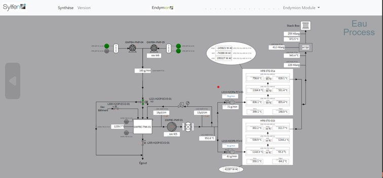
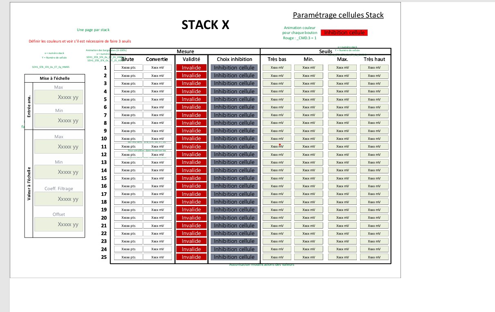

SYL-SUP · Full-stack web
Industrial Supervision Platform
A modular web application, hosted on internal servers, that lets operators monitor live equipment values and control an energy system from the browser.
The challenge
- Plant operators needed one reliable screen to watch and steer a complex industrial process.
- Data came from industrial controllers in real time, not from a typical web API.
What I did
- Joined architecture and technology-choice meetings and helped plan the schedule.
- Designed module screens in Visio, then built them in Node.js, Express and EJS.
- Streamed live values to the browser with Socket.io over OPC UA data.
- Wrote integration tests, deployed, and trained operators.
Result
- Became the daily tool operators used to supervise the system.
- I maintained it through 2024, adding, updating and removing modules as the installation changed.
Node.jsExpressJavaScriptEJSSocket.ioOPC UAPostgreSQLBootstrapGit / GitLabAgile

